One refund message, six languages, and a meter calibrated in English. Why the same sentence costs more, fits less and sometimes understands worse when it is not English, measured on the tokenizers in service in October 2026.
“Your refund has been approved. The money will reach your account within five business days.”
To the tokenizer behind the GPT-5 models, that sentence is 17 tokens. Translated into Hindi, it is 30. Fed to the open-weight Qwen3 tokenizer, the same Hindi sentence becomes 85 tokens, and 42 of them cannot be printed on their own, because each one holds part of a letter’s bytes. The model must glue those shards back into characters before it can start reading. [1]
Qwen3.5 brings the Hindi sentence down to 39. Gemma 4 does it in 23. Same meaning, same customer, and a token count that swings almost fourfold depending on which vocabulary reads it. English is 17 on every one of them.
This is the token tax. Engineers meet it as an invoice line that grows faster than traffic in one region. Localization teams meet it as a quality gap nobody can explain, in a language the product officially supports. It is one problem seen from two desks, and this post carries the refund message past both: into the place where text gets cut, onto the bill, into the context window and the cache, and finally to the question of whether a model that reads more pieces understands less. The answer to that last question is messier than the usual headline. The mess is the useful part.
In this post · 14 min read · 8 figures · 4 tables · 23 sources
After reading, you will be able to:
A tokenizer turns text into integers from a fixed vocabulary, and those integers are all the model ever sees. The common kind, byte-pair encoding (BPE), starts from the 256 possible byte values and learns merges: across a training corpus it finds the most frequent adjacent pair, fuses it into a new vocabulary entry, and repeats until the vocabulary is full. Each merge is a bet that a chunk will be common. The corpus decides which bets get placed, so a finished vocabulary is a census of who wrote that corpus.
The writing system decides how much is at stake when a bet is missing. UTF-8 stores a basic Latin letter in one byte and every character in the block holding Devanagari, Thai, Tamil, Japanese and Ethiopic in three. [2] A byte-level tokenizer never fails (it “works on arbitrary text”, as the tiktoken README puts it), but text it has no merges for is billed at close to byte rate. [3] SentencePiece tokenizers such as Gemma’s reach the same safety net through “byte-level encodings” for characters outside the vocabulary. [4]
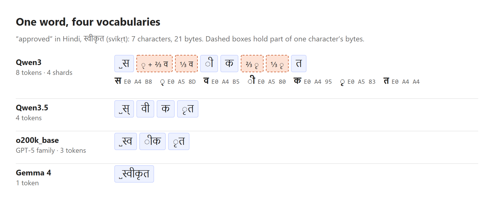
Two details in the vocabularies themselves explain most of what follows. First, a vocabulary has ancestors. Qwen’s technical report says its tokenizer took OpenAI’s cl100k_base “as our starting point” and added Chinese and other entries. [5] The inheritance is visible: the first two-character Devanagari entry sits at position 85,033 in Qwen3 and 86,133 in cl100k, deep in the list where only rare chunks live. Second, a bigger vocabulary is not automatically a fairer one. Qwen3.5 grew to 248,070 entries, yet its first two-character Devanagari entry sits at position 148,465, appended after everything inherited, and its Ethiopic entries fell from 116 to 25.
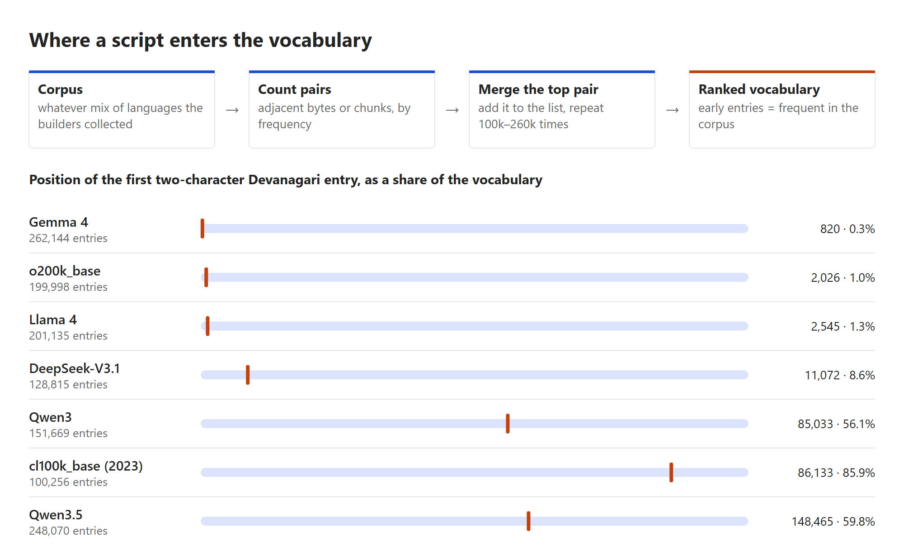
Count every entry by script and the census is explicit. Table 1 shows how many vocabulary entries each tokenizer spends on six scripts.
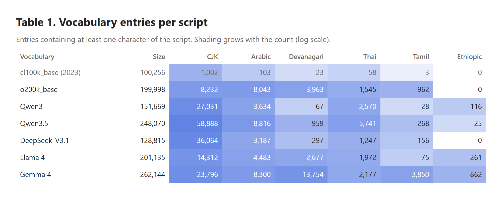
Two terms first. Fertility is tokens per word; premium is tokens for a language divided by tokens for the same content in English. Fertility misleads across languages: a November 2025 paper reports Hindi fertility of 1.72 against 1.33 for English on the GPT-OSS tokenizer, which reads like a 30% gap, [6] yet a Hindi word is not an English word, and Japanese and Chinese do not separate words with spaces. Premium compares meanings, so this post uses it throughout. The translations below were made for this article in plain customer-service register; a professional translator would make different choices, and some would move the count.
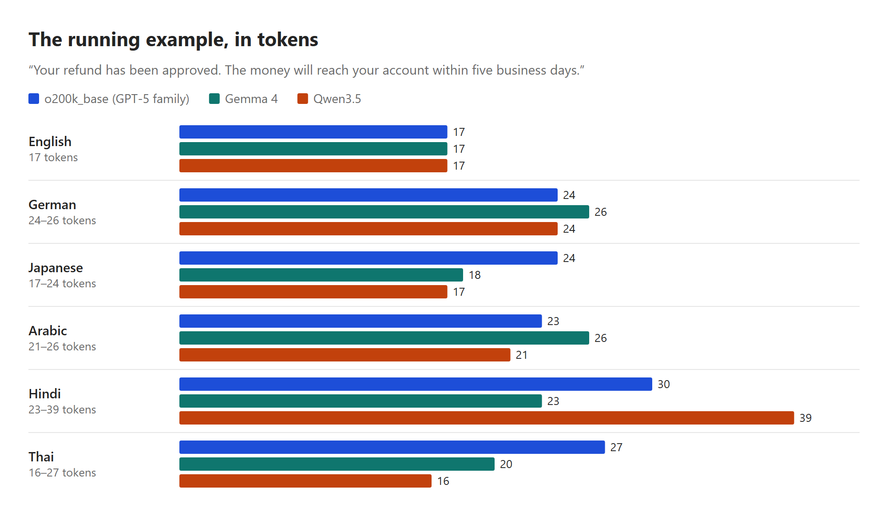
The cuts themselves are worth looking at. Here is the Hindi sentence on Qwen3, one box per token.
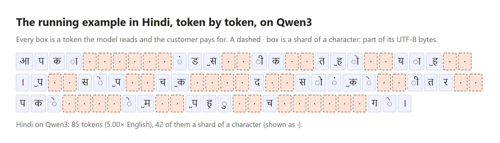
One sentence can flatter or punish a language by accident. Table 2 counts all 1,012 sentences of the FLORES-200 devtest split, Wikipedia-style English professionally translated into some two hundred languages, so every column carries the same meaning line for line. [7]
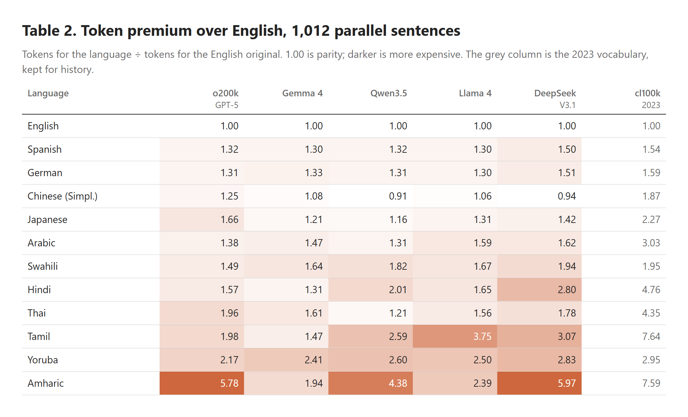
Three readings. The cut was real. Between the 2023 vocabulary and o200k_base, Hindi fell from 4.76× to 1.57×, and Qwen’s own step from 3 to 3.5 took Thai from 2.55× to 1.21×. The 2023 papers that found gaps “up to 15 times” describe tokenizers that are mostly retired, and that is the strongest argument against the premise of this post. [9] [10]
The cut was not shared. Amharic still costs between 1.94× and 5.97× depending on the vocabulary, and it got slightly worse from Qwen3 to Qwen3.5 (4.05× to 4.38×). A June 2026 study of 20 African languages found a median premium of 1.88× on o200k_base, up to 8.92× for N’Ko, and concluded that “no tokenizer eliminates the penalty”. [8]
Script is not the cause; the corpus is. Yoruba and Swahili are written in the Latin alphabet, and Yoruba still pays 2.17× to 2.83× on every current vocabulary measured. Yoruba marks tone with diacritics on its vowels, and too little Yoruba was in the corpora for those marked syllables to earn merges.
The tax is not levied by a language. It is levied by a pair: your language, and somebody else’s corpus.
The pair also changes under a fixed price. Anthropic’s pricing page states that its models from Claude Opus 4.7 onward use a newer tokenizer that “produces approximately 30% more tokens for the same text”, while the per-token price of Opus 4.7 matches its predecessor’s. [11] [12] Price per token is published. Tokens per sentence, in a given language, has to be measured.
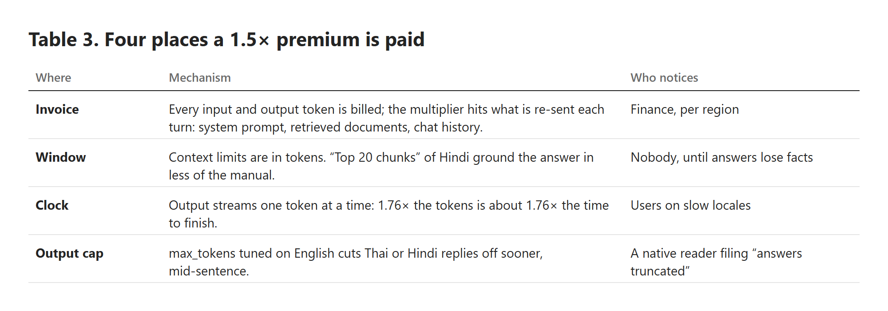
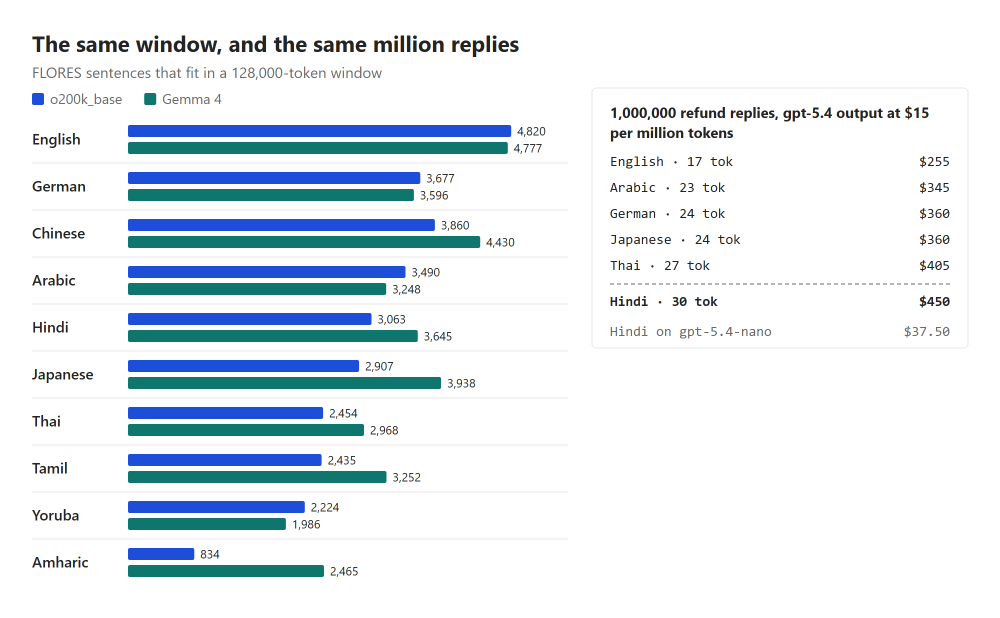
Two of the three large vendors do not publish the tokenizer behind their current models. Gemini’s documentation counts tokens through a countTokens API call and offers a rule of thumb; Anthropic points to a token-counting endpoint. [14] [11] Gemma 4 is the nearest public proxy for Google: the Gemma 3 report says it uses “the same tokenizer as Gemini 2.0”, and Gemma 4 counted identically to Gemma 3 on all twelve languages here. [4] [1] Whether Gemini 3.x still uses it is not published. A team that wants a premium for its own model has to ask the meter, per locale.
Cost-aware systems check a budget before calling the model, and exact counts need the tokenizer, so plenty of code estimates. Google’s documentation says a Gemini token “is equivalent to about 4 characters”; Anthropic’s says one token is “approximately 4 characters or 0.75 words in English”; tiktoken’s README says “about 4 bytes”. [14] [11] [3] All three are fair for English. Figure 6 applies the two common rules to o200k_base counts on FLORES.
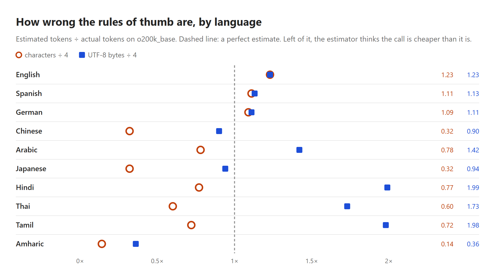
Underestimating is the dangerous direction: a budget gate that believes Japanese is three times cheaper waves through calls that overrun, and the dashboard reports the difference as unexplained spend in one region. The repair is a coefficient per model and locale, measured on real prompts rather than on encyclopedia prose, with the estimate logged beside the actual.
# measure once per model, then budget with it
import tiktoken
enc = tiktoken.get_encoding("o200k_base") # what gpt-5.x maps to
def premium(samples, base="en"):
# samples: {locale: [the same prompts, translated]}
n = {loc: sum(len(enc.encode(s)) for s in texts)
for loc, texts in samples.items()}
return {loc: round(v / n[base], 2) for loc, v in n.items()}
def preflight(english_estimate, model, locale, budget):
est = english_estimate * PREMIUM[(model, locale)]
log("tokens.estimate", est, model=model, locale=locale)
return est <= budgetPrompt caching lets a provider reuse the work of reading an unchanged prompt prefix and bill it at a discount. Anthropic’s documentation puts cache reads at 0.1× the base input price on most models, with a five-minute default lifetime, and requires “100% identical prompt segments”; OpenAI lists gpt-5.4 cached input at $0.25 per million tokens against $2.50 uncached. [15] [13] Teams that translate the whole system prompt into each locale create one cache entry per locale, and each must be kept warm by its own traffic.
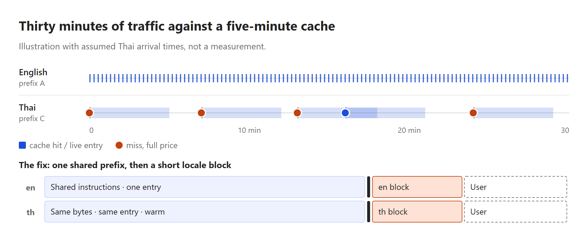
Identical-looking prefixes also need identical bytes. The Hindi loanword for refund, रिफ़ंड, contains फ़, which Unicode can store as one code point (U+095E) or as फ plus a combining dot. Here is the trap an expert would repeat: normalizing to NFC, the usual “canonical composed” form, does not compose this letter. It is a composition exclusion, so NFC decomposes it. [16] The two spellings tokenize differently too: 3 and 4 tokens on Gemma 4, 5 and 4 on Llama 4. [1] Pick one normalization form, apply it to every string before assembly, and include it in whatever computes the cache key.
# assemble a cache-friendly prompt
from unicodedata import normalize
def build(locale, user_text):
nfc = lambda s: normalize("NFC", s) # U+095E becomes 2 code points
return [
{"type": "text", "text": nfc(SHARED), # same bytes, all locales
"cache_control": {"type": "ephemeral"}},
{"type": "text", "text": nfc(LOCALE_BLOCK[locale])}, # after the breakpoint
{"type": "text", "text": nfc(user_text)},
]This is where the story usually overreaches. Table 4 lines up the evidence.
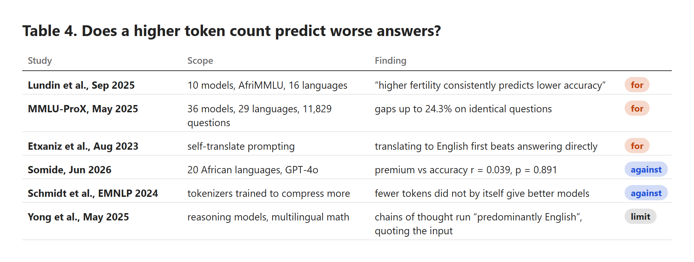
The reading offered here is that both camps measure symptoms of one cause. A language fragments because little of it was in the tokenizer’s corpus, and the model trained alongside usually saw little of it too. Token count and accuracy travel together because they share a parent. Fix the vocabulary and the bill, the window and the clock improve; the model has not thereby learned Amharic. The last row adds a twist for reasoning models: if the hidden chain of thought runs in English, the reasoning tokens billed as output are English-priced, and the premium falls on the quoted input and the visible answer. That is an inference from the paper, not a measurement.
Token count is a thermometer, not the fever.
Benchmarks also miss what a native reader notices. In Hindi the polite pronoun आप is always grammatically plural, even for one person, so its verb agrees in the plural; [22] a reply that drifts into singular agreement is a fluency error no multiple-choice test catches. Vocabulary is a register decision as well: the loanword रिफ़ंड and the formal प्रतिदाय both mean refund, and on o200k_base the formal word is cheaper, 3 tokens against 4. [1] Token count must never choose the term. Score accuracy errors (wrong facts) apart from fluency errors (right facts, wrong voice); they have opposite fixes, and one averaged score hides which kind a locale has.
A tokenizer is fitted once, frozen, and then rented to every speaker on Earth at a per-token price. Whoever assembled its corpus decided, mostly without meaning to, which languages would be cheap for the life of the model. Ahia and colleagues put the consequence plainly in 2023: speakers of many languages “are overcharged while obtaining poorer results”, and they “tend to also come from regions where the APIs are less affordable to begin with”. [10] The vendors have since cut the gap for large languages; Table 2 shows they have not cut it for everyone, and Qwen3.5’s Amharic shows a new vocabulary can quietly raise it.
The engineering responsibility is narrower and more concrete than fairness in the abstract. Per-token pricing defines a unit the customer cannot audit for most closed models; a team that bills its own users in tokens, or caps a free tier at a token quota, passes the same tax down a level, so a Hindi user gets fewer answers than an English user for the same plan. Quotas in messages or characters, per-locale budgets and published premiums are all available choices. Byte-level research such as MYTE reports shorter and more even encodings across 99 languages, but nothing of that kind is a drop-in fix for a model rented through an API. [23]
The refund message that opened this post costs 17 tokens in English everywhere and anywhere from 23 to 85 in Hindi, depending on whose corpus built the vocabulary. That premium is paid four times, on the bill, in the window, on the clock and at the output cap; it is underestimated by English rules of thumb and compounded by caches that go cold in quiet locales. It does not, on current evidence, explain the quality gap by itself: the gap comes from the same thin training data that made the vocabulary expensive, and closing it is a translation-quality problem measured by native reviewers.
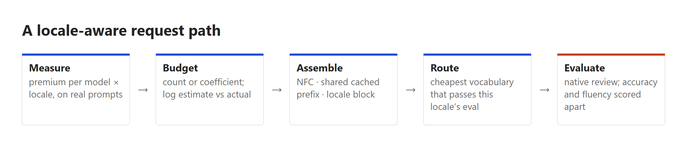
So the change for Monday is three lines of work, not a research project. Count a hundred real prompts and their production translations on the tokenizer actually being called, and store the ratio per model and locale; re-run it on every model upgrade, because the vocabulary can change under an unchanged price. Move the long instructions into one normalized, byte-identical prefix and put the locale block after the cache breakpoint. And send a native reviewer a sample from the locale with the highest premium, asking two separate questions: is it right, and does it sound like the product. The token tax is set by a corpus somebody else chose. It is still a number a team can own.
Prices and model facts change; each entry carries the date of the page or the date it was read.